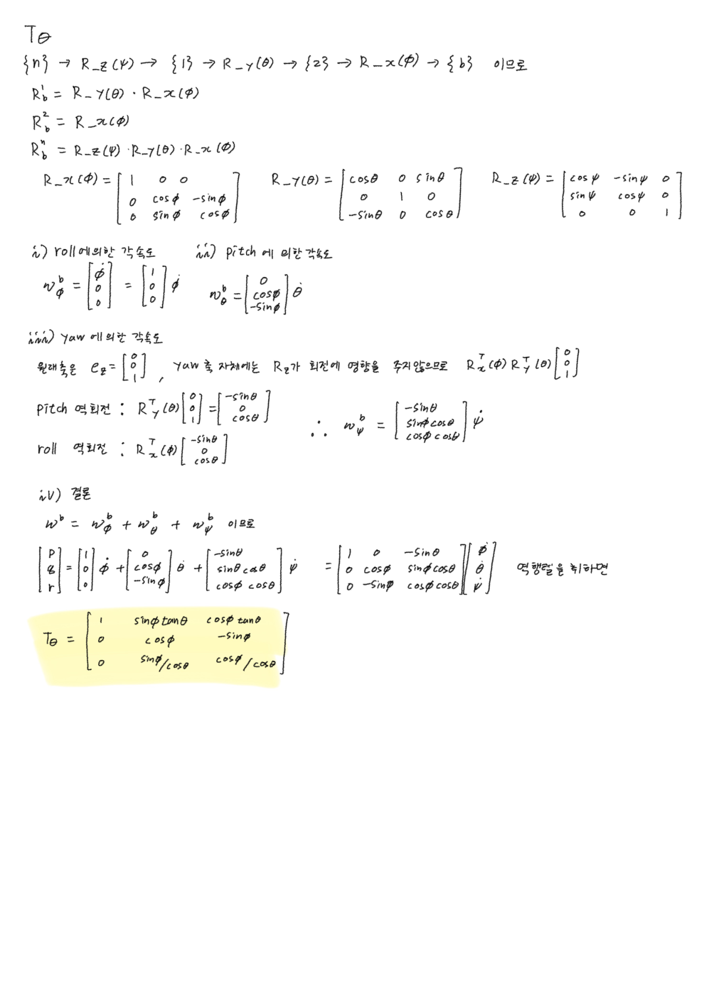

Euler Angle Rates
한 줄로
T_Θ(Θ)— BODY 각속도[p,q,r]를 Euler 각 변화율[φ̇,θ̇,ψ̇]로 바꾸는 행렬. 자이로에서 선수각 ψ를 뽑아내는 유일한 통로이고, 회전행렬R을 여기에 쓸 수 없다.
어디에 앉는가 — 6-DOF Marine Craft Model 의 야코비안 J(η) 아래쪽 블록. 각속도 변환 담당.
왜 필요한가
자이로는 “지금 초당 3도씩 돌고 있다”만 알려준다. “북쪽에서 45도 틀어져 있다”는 절대 안 알려준다. 그 변환이 T_Θ.
T_Θ 없이는 자이로 데이터에서 자세를 적분해낼 방법이 아예 없다. strapdown INS의 핵심.
[p,q,r] 과 [φ̇,θ̇,ψ̇] 는 같은 종류의 물건이 아니다
여기에 R 을 쓸 수 없는 이유 전부가 이것이다.
[p,q,r]— 배에 서로 직각으로 붙인 자이로 3개의 측정값. 세 축이 전부{b}에 있고 직교한다.[φ̇,θ̇,ψ̇]— 다이얼 3개가 겹겹이 포개진 구조. 각 다이얼의 회전축이 서로 다른 좌표계에 속하고, 일반적으로 직교하지도 않는다.
즉 [p,q,r] → [φ̇,θ̇,ψ̇] 는 “같은 벡터를 다른 좌표계로 옮기는 일”이 아니다. 직교하는 세 축의 성분을 비뚤어진 세 축의 성분으로 재분배하는 일.
R이 하는 일은 같은 화살표를 다른 자로 다시 재기.T_Θ가 하는 일은 성분 재분배. 다른 작업이므로 회전행렬일 수 없다.
중간 좌표계 {1}, {2} 는 회전축의 주소를 말하기 위해 있다
Euler angle은 “세 번 연달아 돌린다”는 정의 그 자체라서 중간 단계가 생긴다.
{n} ──yaw ψ──► {1} ──pitch θ──► {2} ──roll φ──► {b}
{1}, {2} 는 물리적으로 존재하지 않는 이름표다. 그런데 각 다이얼의 회전축 주소를 말하려면 반드시 필요하다.
| 다이얼 | 회전축 |
|---|---|
ψ̇ (yaw) | {n}의 z축 — 맨 바깥 |
θ̇ (pitch) | {1}의 y축 — 중간 |
φ̇ (roll) | {2}의 x축 — 맨 안쪽 |
pitch 축은 {b} 의 y축도 아니고 {n} 의 y축도 아니다. 배를 90° 눕히면 {b} 의 y축은 아래를 향하지만 pitch 다이얼은 안 움직인다 (roll이 pitch보다 나중에 얹힌 회전이라서). 그 “둘 사이 어딘가”를 지목하려면 {1} 이라는 이름이 있어야 한다.
옛날 기계식 짐벌에서는 {1}, {2} 가 진짜 금속 링이었다.
┌── 바깥 링 {1} : 연직축 중심 = yaw
│ ┌── 중간 링 {2} : 바깥 링에 걸려서 = pitch
│ │ ┌── 안쪽 링 {b} : 중간 링에 걸려서 = roll
밑에 깔린 링이 많을수록 식이 복잡해진다. 그게 T_Θ⁻¹ 의 세 열이 다르게 생긴 이유 전부.
탱크 포탑으로 보면 세 축이 서로 다른 부품에 붙어 있다
짐벌 링 비유가 안 잡히면 탱크로 보면 즉시 확인된다. 각 회전축이 실제로 어디 붙어 있는 쇠막대인지 눈에 보이기 때문.
| 회전 | 축이 붙어 있는 곳 | 언제 축이 움직이나 |
|---|---|---|
| 포탑 좌우 = yaw | 차체에 박힌 수직 베어링 | 절대 안 움직임. 포신을 아무리 들어도 하늘을 향해 서 있다 |
| 포신 상하 = pitch | 포탑에 붙은 가로 핀 | 포탑을 90° 돌리면 핀도 같이 90° 돈다 |
| 포신 축 회전 = roll | 포신 자체 | 포탑을 돌려도, 포신을 들어도 움직인다 |
{n} = 차체 ← yaw 축이 여기 붙어 있음
{1} = 포탑 ← pitch 축이 여기 붙어 있음
{2} = 포신 방향 ← roll 축이 여기 붙어 있음
세 축이 서로 다른 물건에 붙어 있다. 그래서 "하나의 좌표계에 사는 직교 축 3개"라고 말할 수가 없다.
결정타 — 센서를 어디에 붙일 것인가
가장 확실한 확인 방법. 각 변화율을 직접 측정하려면 센서를 어디에 달아야 하나?
| 재고 싶은 값 | 어디에 다나 |
|---|---|
ψ̇ | 차체–포탑 베어링에 회전 엔코더 |
θ̇ | 포탑–포신 핀에 회전 엔코더 |
φ̇ | 포신 자체에 |
세 군데다. 반면 [p, q, r] 은 — 자이로 상자 하나를 볼트로 박으면 끝.
[φ̇, θ̇, ψ̇] ← 센서 3개를 서로 다른 세 부품에 나눠 달아야 나오는 값
[p, q, r] ← 상자 하나를 배에 박으면 나오는 값
이 비대칭이
T_Θ의 존재 이유 전부다.T_Θ= "링이 실제로 있었다면 각 링의 엔코더가 뭘 읽었을지"를 자이로 하나로부터 역산하는 계산.
배가 눕는다 ≠ yaw축이 눕는다
배가 우현으로 90° 누워도 yaw축(연직축)은 여전히 하늘을 향해 서 있다. yaw축은 배가 아니라 {n} 에 붙어 있으니까. 바뀌는 건 그 축이 배의 몇 번 자이로에 보이는가 뿐이다.
똑바로 설 때 오른쪽 90° 누웠을 때
↑ 연직 ↑ 연직
z (밑바닥축) y (우현축) ← 우현축이 연직을 향한다
→ yaw는 r 이 읽음 → yaw는 q 가 읽음
“선수각이 변하는 중”이라는 똑같은 사실이, 자세에 따라 완전히 다른 자이로에 나타난다. 그래서 ψ̇ 를 알려면 자세를 먼저 알아야 하고, 그래서 T_Θ 가 Θ 의 함수다.
유도 — 각속도는 더할 수 있다
각속도는 벡터처럼 더해진다. (유한 회전은 순서가 중요하지만, 무한소 회전율은 자유롭게 더해진다 — 중요한 구분. → Transport Theorem)
ω_nb = φ̇ · (roll축) + θ̇ · (pitch축) + ψ̇ · (yaw축)
문제는 세 축이 서로 다른 좌표계에 산다는 것. 전부 {b} 성분으로 끌어와야 좌변이 [p,q,r] 이 된다.
① 각 좌표계에서 BODY로 가는 행렬
체인이 {n} ─R_z(ψ)→ {1} ─R_y(θ)→ {2} ─R_x(φ)→ {b} 이므로
R^1_b = R_y(θ) R_x(φ) R^2_b = R_x(φ)
R^n_b = R_z(ψ) R_y(θ) R_x(φ)
역방향은 전치. 곱의 전치는 순서가 뒤집힌다는 것만 주의한다.
R^b_2 = R_x(φ)ᵀ
R^b_1 = R_x(φ)ᵀ R_y(θ)ᵀ
R^b_n = R_x(φ)ᵀ R_y(θ)ᵀ R_z(ψ)ᵀ
② 세 축을 하나씩 BODY로 옮긴다
행렬에 e₁, e₂, e₃ 를 곱하면 그 행렬의 해당 열이 그대로 나온다. 계산이 전부 “열 뽑기”로 끝나는 이유.
roll : R_x(φ)ᵀ e₁ = [ 1, 0, 0 ]ᵀ
→ x축 회전은 x축을 안 건드림
pitch : R_x(φ)ᵀ · (R_y(θ)ᵀ e₂)
R_y(θ)ᵀ e₂ = [0,1,0]ᵀ → y축 회전은 y축을 안 건드림
R_x(φ)ᵀ [0,1,0]ᵀ = [ 0, cosφ, −sinφ ]ᵀ
yaw : R_x(φ)ᵀ · R_y(θ)ᵀ · (R_z(ψ)ᵀ e₃)
R_z(ψ)ᵀ e₃ = [0,0,1]ᵀ → z축 회전은 z축을 안 건드림 (ψ가 사라지는 지점)
R_y(θ)ᵀ [0,0,1]ᵀ = [ −sinθ, 0, cosθ ]ᵀ
R_x(φ)ᵀ [−sinθ, 0, cosθ]ᵀ = [ −sinθ, cosθ·sinφ, cosθ·cosφ ]ᵀ
| 다이얼 | BODY 기준 축 | 왜 |
|---|---|---|
| roll | [1, 0, 0] | 밑에 아무것도 없음 |
| pitch | [0, cosφ, −sinφ] | roll 하나가 밑에 깔림 |
| yaw | [−sinθ, cosθ·sinφ, cosθ·cosφ] | roll·pitch 둘이 밑에 깔림 |
③ 세 축을 열로 세워 붙인다
⎡ p ⎤ ⎡ 1 0 -sinθ ⎤ ⎡ φ̇ ⎤
⎢ q ⎥ = ⎢ 0 cosφ cosθ·sinφ ⎥ ⎢ θ̇ ⎥ ← 이게 T_Θ⁻¹
⎣ r ⎦ ⎣ 0 -sinφ cosθ·cosφ ⎦ ⎣ ψ̇ ⎦
└roll┘└pitch┘└─ yaw ─┘
이 방향에는 나눗셈이 전혀 없다. sin·cos만. 물리적으로 자연스러운 방향이라서 그렇다. 세 열 모두 길이가 1인 단위벡터다 (3열 검산: s²θ + c²θ(s²φ+c²φ) = 1 ✓).
손으로 유도한 것 (2026-09-04)

Gimbal lock은 오일러각 표현 자체의 결함이다
θ = 90° (코를 하늘로 수직)을 넣으면:
roll 축 = [ 1, 0, 0]
yaw 축 = [-1, 0, 0] ← 같은 직선 (부호만 반대)
두 다이얼이 정확히 같은 일을 한다. 결과:
- 자유도 하나를 잃는다 — 다이얼 3개로 2가지 회전밖에 못 만듦
- 역변환 불가 —
p,q,r을 측정해도φ̇와ψ̇를 분리할 수 없음 (합만 알 수 있음) - 수식에서는
1/cos90° = 1/0으로 나타남
각도 3개로 자세를 표현하는 모든 방식이 어딘가에서 이 문제를 겪는다. 잠수정이 수직 잠항하거나 항공기가 수직 상승하면 항법 계산이 실제로 터진다.
그래서 실무에서는 quaternion(숫자 4개, 특이점 없음)을 쓴다. Fossen 2.2.2절. 이번 강의 슬라이드에는 없음.
수식
우리가 가진 건 p,q,r, 원하는 건 φ̇,θ̇,ψ̇ — 방향이 반대라서 역행렬을 구해야 한다.
여인수전개는 필요 없다. T_Θ⁻¹ 의 구조가 계산을 대신 해준다.
구조를 이용한 역행렬
스칼라 세 식으로 풀어쓰면:
p = φ̇ − sθ · ψ̇ … (1)
q = cφ θ̇ + cθ sφ · ψ̇ … (2)
r = -sφ θ̇ + cθ cφ · ψ̇ … (3)
(2)와 (3)에는
φ̇가 없다.φ̇는 (1)에만 나온다.
그래서 2×2를 풀고 → (1)에 대입하면 끝난다.
⎡ q ⎤ ⎡ cφ cθ sφ ⎤ ⎡ θ̇ ⎤
⎢ r ⎥ = ⎢-sφ cθ cφ ⎥ ⎢ ψ̇ ⎥
det = cφ·(cθ cφ) − (cθ sφ)·(−sφ) = cθ(cφ² + sφ²) = cθ
이 한 줄이
1/cosθ와tanθ의 유일한 출처다.T_Θ가 회전행렬이 아니라는 증거이자 gimbal lock의 수식적 뿌리.
[a b; c d]⁻¹ = (1/det)[d −b; −c a] 를 적용하면:
θ̇ = (cθ cφ · q − cθ sφ · r)/cθ = cφ·q − sφ·r ← cθ 가 약분돼 사라진다
ψ̇ = (sφ · q + cφ · r)/cθ = (sφ/cθ)·q + (cφ/cθ)·r
(1)에 대입:
φ̇ = p + sθ·ψ̇ = p + (sθ/cθ)(sφ q + cφ r) = p + sφ·tanθ·q + cφ·tanθ·r
결과
⎡ 1 sinφ·tanθ cosφ·tanθ ⎤
T_Θ(Θ) = ⎢ 0 cosφ -sinφ ⎥ [φ̇,θ̇,ψ̇]ᵀ = T_Θ · [p,q,r]ᵀ
⎣ 0 sinφ/cosθ cosφ/cosθ ⎦
읽는 법 — R 과 결정적으로 다른 두 곳만 보면 된다.
- ψ가 없다. φ와 θ만. 선수를 어디로 두든 다이얼끼리의 기하 관계는 안 변하니까
tanθ와1/cosθ라는 나눗셈이 있다. 역행렬 계산에서cosθ로 나누게 되어 생긴 것.R은 역변환이 그냥 전치라 이런 게 없었다 —T_Θ는 회전행렬이 아니기 때문- 나눗셈이 1행과 3행에만 있다. 2행은
cθ가 약분돼 깨끗하다 →θ̇는 어떤 자세에서도 항상 복원된다. gimbal lock이φ̇와ψ̇만 못 쓰게 만드는 이유가 이것이다
검산
| 조건 | 결과 | 맞는 이유 |
|---|---|---|
| 수평 (φ=0, θ=0) | T_Θ = I → p=φ̇, q=θ̇, r=ψ̇ | 다이얼과 자이로가 완전히 정렬된 상태 |
| 오른쪽 90° 누움 (φ=90°, θ=0) | φ̇=p, θ̇=−r, ψ̇=q | 배가 누우면 우현축이 연직을 향하므로 yaw를 만드는 건 pitch 자이로. R 로는 절대 나올 수 없는 관계 |
θ = ±90° | 1/cos90° 발산 | gimbal lock. 식이 터지는 게 아니라 표현이 자유도를 잃은 것 |
T_Θ⁻¹ 각 열의 길이 | 전부 1 | 회전축을 단위벡터로 적었으므로 |
헷갈렸던 점
”각속도도 R로 바꾸면 되겠지”
가장 자연스럽지만 틀린 추측. 왜 틀렸는지 이해하는 게 이 파트의 최고 난도 지점이었다. 답은 위 두 절 — 성분 재분배이지 좌표변환이 아니다.
”{1}, {2} 를 왜 만드는지 모르겠다”
R 을 만들 때는 필요 없었다 (행렬 곱만 하면 됨). T_Θ 를 만들 때만 필요하다 — 회전축은 반드시 어떤 좌표계 기준으로 말해야 하는데, pitch 축이 {n} 에도 {b} 에도 없기 때문.
”각도가 NED 기준이면 변화율도 NED 벡터 아닌가?”
아니다. 각도 φ, θ, ψ 가 NED를 기준으로 정의되는 건 맞다 (ψ 는 진북에서, θ 는 수평면에서, φ 는 뱃머리 축 중심으로). 하지만 그 변화율 [φ̇, θ̇, ψ̇] 는 어느 한 좌표계의 성분 3개가 아니라 세 좌표계에 걸쳐 있는 다이얼 속도 3개다.
"기준이 무엇인가"와 "벡터인가"는 별개의 질문.
”NED의 x축은 북쪽이다”
진북(true north) 이다. 자북이 아니다. 지자기 센서로 ψ 를 얻으려면 편각(declination) 보정이 필요하다 — 항법 실무에서 실제로 물리는 지점.
”T_Θ 도 회전행렬이니까 전치하면 역행렬이겠지”
열들이 직교하지 않으므로 T_Θ⁻¹ ≠ T_Θᵀ. 여기서 나눗셈이 생기고, gimbal lock이 따라온다.
내가 실제로 써본 곳
- 6-DOF Marine Craft Model —
J(η)의 아래쪽 블록 - 2026-09-04 — 중간 좌표계 정의부터
T_Θ완성까지 손으로 재유도. 강의를 다시 보지 않고 재현됨 (원본은 위 「유도」 절에 첨부) - 아직 코드로 직접 쓴 적 없음. MSS Toolbox
eulerang.m으로 확인 예정
참고
- 강의 : 제어공학특론 — Angular Velocity Transformation, 6-DOF Kinematic Equations
- 교재 : Fossen, Handbook, Ch.2.2.1 Euler Angle Transformation / 2.2.2 Unit Quaternions
- 툴박스 : MSS Toolbox
eulerang.m